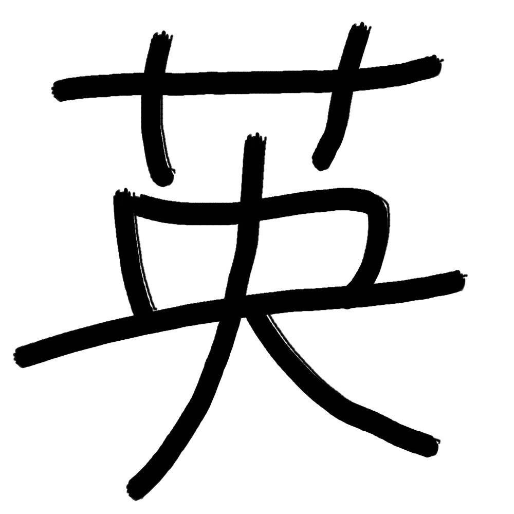

結果
間違えた単語
%
閉じる
三
1~4 で選択
1
2
3
4
選択してください
demo2
p14~p19
p20~p25
p26~p31
p32~p37
p38~p43
p44~p49
p50~p55
p56~p79
p80~p85
p86~p91
p104~p109
p110~p115
p116~p121
p140~p145
p146~p151
p152~p157
p158~p163
p164~p169
p170~p175
p176~p181
p182,p202~p205
p206~p211
p212~p217
p218~p223
p224~p231
p232~p237
p238~p243
p244~p251
p262~p267
p268~p273
p274~p277
Unit1
Unit2
p230~p247
基本動詞
基本形容詞
基本動詞(逆)
基本形容詞(逆)